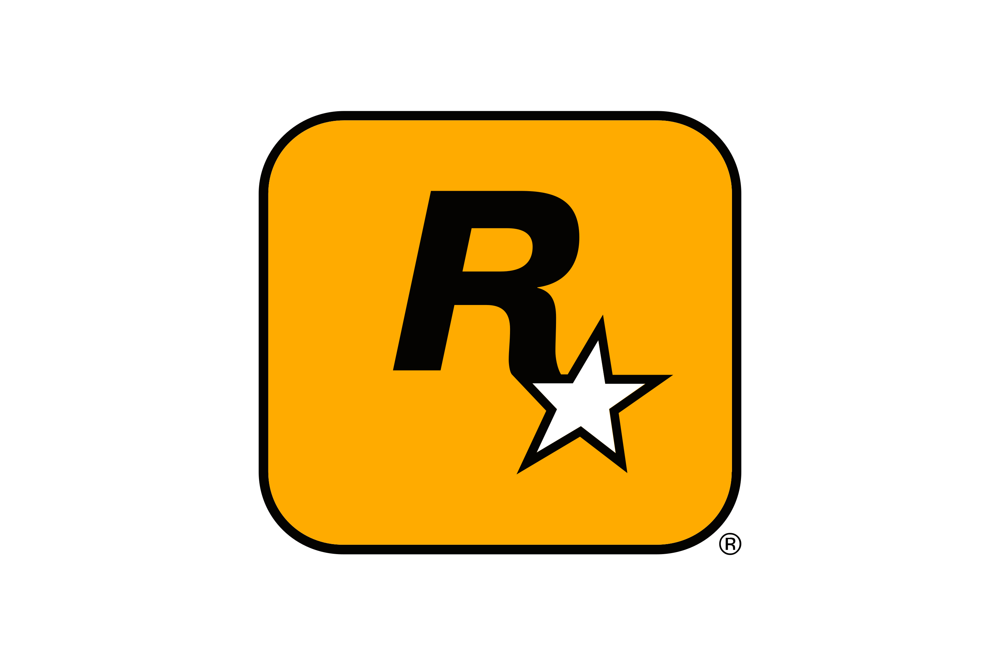

DESENVOLVEDORAS DE JOGOS

A Rockstar Games é uma renomada desenvolvedora e publicadora americana de videogames. Fundada em 1998 e sediada em Nova York, é subsidiária da Take-Two Interactive. É mundialmente famosa por produzir franquias de altíssimo sucesso, como Grand Theft Auto (GTA), Red Dead Redemption e Bully.


GENEROS: AÇÃO - AVENTURA / MUNDO ABERTO / TIRO
O estúdio é mundialmente conhecido pela atenção aos detalhes, animações hiper-realistas, mecânicas de tiro e movimentação fluidas, além de gráficos que frequentemente extraem o desempenho máximo dos consoles da Sony. É considerado um dos pilares da divisão PlayStation Studios.


GENEROS: AÇÃO - AVENTURA / TIRO EM PRIMEIRA PESSOA
é uma das principais publicadoras e desenvolvedoras globais de jogos eletrônicos para consoles, PC e dispositivos móveis. A empresa é mais conhecida por suas franquias de sucesso, incluindo EA SPORTS FC (antigo FIFA), The Sims, Apex Legends e Battlefield.


GENEROS: AÇÃO / ESPORTES / SIMULAÇÃO
A TT Games é uma desenvolvedora britânica de videogames, mais conhecida por ser a principal criadora dos jogos oficiais da franquia LEGO. Fundada em 2005 e subsidiária da Warner Bros. Games, a empresa é famosa por adaptar grandes universos da cultura pop para o formato de blocos de montar.


GENEROS: AÇÃO / QUEBRA CABEÇA / AVENTURA